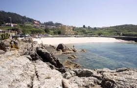

El Puerto pesquero se caracteriza por las casas típicas marineras, estrechas, de varios pisos y de gran colorido.
El Puerto pesquero se caracteriza por las casas típicas marineras, estrechas, de varios pisos y de gran colorido.
Podemos visitar en A Guarda:
A Guarda es uno de los enclaves turísticos más importantes de Galicia, en gran parte por el Monte Trega, lugar de visita obligada por sus interesantes valores arqueológicos.
El Puerto pesquero se caracteriza por las casas típicas marineras, estrechas, de varios pisos y de gran colorido.
En el Puerto se encuentra el conventos de las Benedictinas, transformado a finales del XX en hotel. Subiendo unas empinadas escaleras se accede a la calle Colón, antigua calle que une la zona del puerto con el casco antiguo.
El casco urbano se organiza en torno al puerto pesquero, reflejo del pasado y presente marinero de A Guarda.
En el privilegiado entorno natural que forma la desembocadura del río Miño se localizan estas cuatro playas a lo largo de los últimos dos kilómetros de la desembocadura y que forman una perfecta unidad.